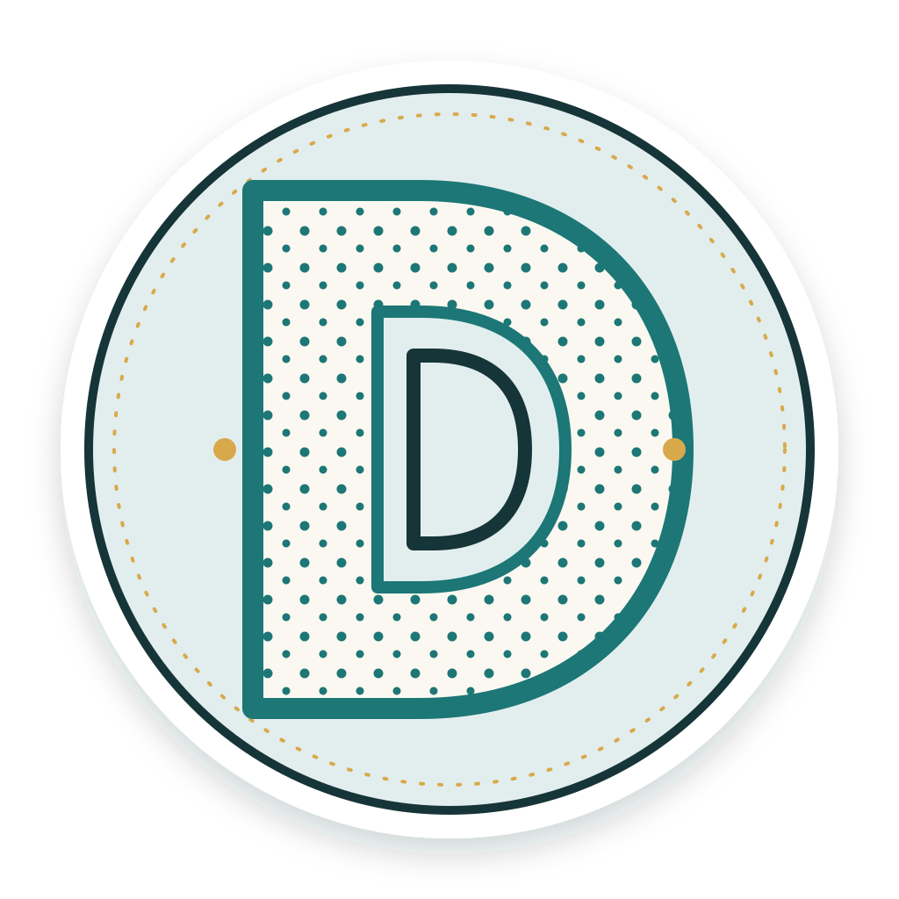

Featured artifact
Zimbabwe Heritage Stamp
This stamp design celebrates Zimbabwe through its country name, portrait, and green perforated frame. The one dollar value and McLloyd name label make the piece read as a personal commemorative stamp.
Design elements: line, shape, color, and texture.
Design principles: hierarchy gives the country name and portrait priority; contrast keeps the white lettering clear against the dark center; repetition in the perforations creates rhythm and unity; the centered frame balances the composition.
Color scheme: green, white, and charcoal create a simple high-contrast palette connected to the stamp’s Zimbabwean theme.

Personal brand design
A distinctive D
A text-free sticker refined from a hand-drawn letter D sketch. Repeated dots, a clear silhouette, and the portfolio’s teal, cream, and gold colors make it easy to use across different contexts.
Download the sticker
About the designer
Dadirai Pise is a Communication Science student at Ensign College, interested in clear communication and thoughtful visual storytelling.